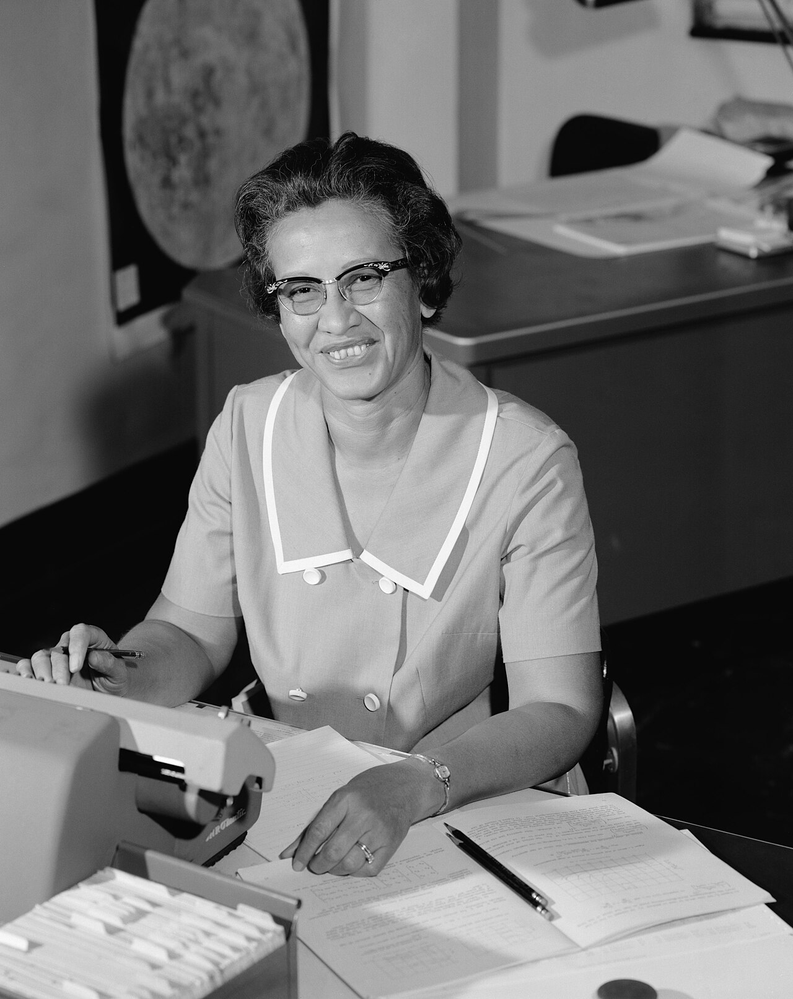
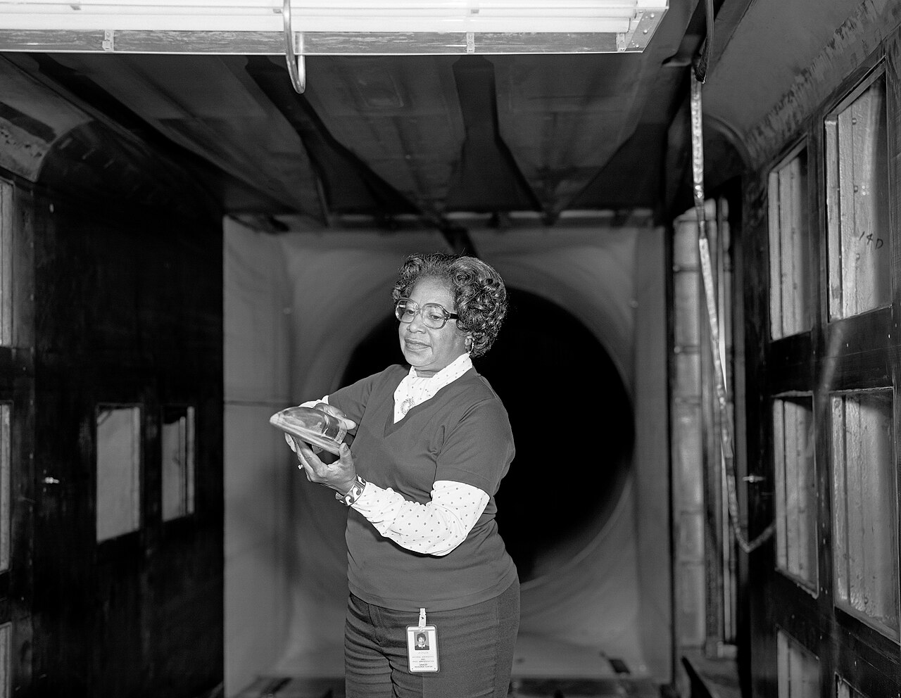
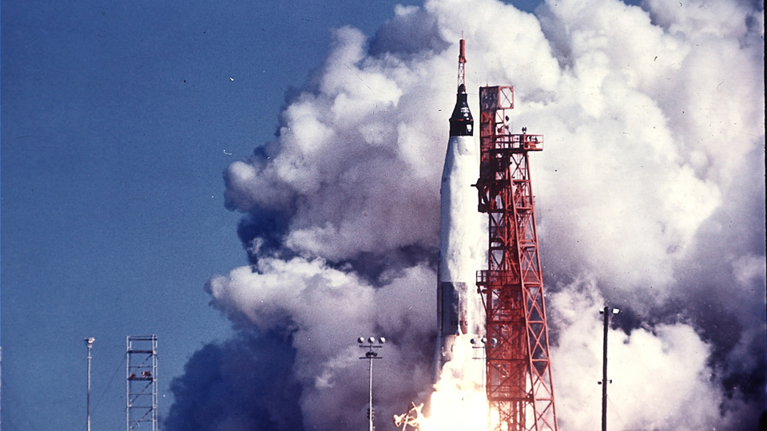
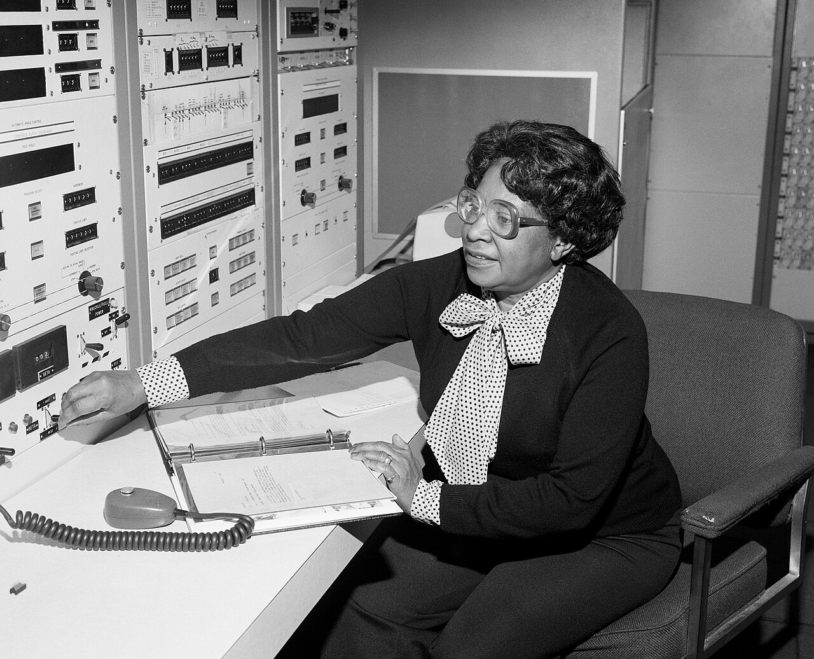

English · B1, B2, C1 · My Working Day · NASA Langley
Hidden Figures
How did three Black women build careers that helped America reach orbit?
Hidden FiguresHow did three Black women build careers that helped America reach orbit?
Hidden Figures, Theodore Melfi, 2016, bande-annonce officielle, © 20th Century Fox
Watch the official trailer
Watch once without writing. Watch a second time and answer in English.
- Which three jobs appear in the trailer (or which three women), and what does each one seem to do at NASA?
- What obstacles at work do you notice (space, tools, people, rules)? Give two clear examples from the images or the dialogue.
- The film is inspired by a true story. What one question would you ask a historian before you trust a scene from the film?
Show answers · possible ideas
1. Katherine Johnson (mathematician / human computer: checks trajectories), Dorothy Vaughan (supervisor / early programmer), Mary Jackson (engineer). Exact wording may vary.
2. Possible examples: segregated facilities; being kept out of meetings; limited access to data or computers; having to prove skill twice; a boss who doubts them. Accept any two clear visual or spoken cues from the trailer.
3. Open: e.g. “Is this scene documented in NASA archives or only invented for the film?” / “Who else was in the room, and what do the primary sources say?”
One sequence, three levels. Everyone studies the same photographs and the same history. Choose the B1, B2 or C1 task in each lesson. C1 adds denser reading, nuance, and a longer written report or essay. The vocational focus stays: the job of a human computer, an engineer, a supervisor; discrimination, promotion and recognition at work.
Film note. Students may watch Hidden Figures (Theodore Melfi, 2016) when the teacher organises it. The opening image is a NASA photograph in the public domain. Other lesson photographs are also NASA public-domain images. The official trailer sits on this page; then compare the film with the documented history in the lessons.
At a glance
| Series | My Working Day · sequence 08 |
|---|---|
| Students | Bac pro and lycée (B1 / B2) and advanced classes: terminale, post-bac, BTS (C1 path). |
| Length | Five lessons of about 50 to 55 minutes, plus a final project. |
| Skills | Reading NASA biographies; speaking about careers; writing at B1, B2 or C1; cultural analysis: film versus history. |
| Other version | Dys-friendly version |
The five lessons
The workplace: human computers under Jim Crow. Lesson 2Katherine, Dorothy and Mary
Three careers: computer, supervisor, engineer. Lesson 3Film work: scenes in words
Describe scenes; separate fact from fiction. Lesson 4Expanding your vocabulary and grammar
Core lexicon + C1 extension; past narrative. Lesson 5Speak, write and final project
Oral · written B1 / B2 / C1 · exhibition. RecapWhole-unit checklist SourcesNASA image credits
How to use this sequence
- Open each lesson with the title, the large NASA photograph and the five rubrics.
- Assign B1, B2 or C1 (or let students choose with guidance). Same texts; different depth.
- Every lesson has Expanding your vocabulary, Homework, and hidden answers.
- The answers are visible in Version prof, and in the version for the student who cannot come to class.
Notes pour l’enseignante (français) : une seule séquence, trois niveaux de tâches.
Lesson 1 · about 55 minutes · B1 / B2 / C1
Langley, segregation and the West Area ComputersThe real workplace behind the film

Discover West Area Computing as a real workplace: tasks, hierarchy, segregation, and the path to supervision.
By the end of the lesson, I can explain what a human computer did, say how segregation shaped daily work, and place three key dates on a timeline, at my level.
Lesson plan
- Warm-up from the photograph: 10 min
- Document study: West Area Computing: 25 min
- Differentiated writing / speaking: 12 min
- Expanding your vocabulary and Homework: 8 min
Activity 1 · Warm-up from the photograph (10 min)
All levels. Look at the NASA photograph. In pairs:
- What kind of workplace do you see?
- Who were “human computers” before electronic machines?
- Why might Black women mathematicians appear together in one office photograph in the 1940s or 1950s?
Show answers · possible ideas
- A formal office of skilled women with papers and calculating work.
- People who did complex calculations for engineers by hand or with mechanical calculators.
- At Langley they were assigned to a segregated unit: West Area Computing.
Activity 2 · Document study (25 min)
Classroom synthesis (NASA biographies).
During the Second World War the National Advisory Committee for Aeronautics (NACA) hired women as mathematicians, called “computers”, to process wind-tunnel and flight data at Langley Research Center in Hampton, Virginia. Because of segregation in Virginia, newly hired Black women mathematicians worked in a separate unit: West Area Computing. They used separate dining and bathroom facilities at first. Dorothy Vaughan joined in 1943 and became head of the unit in 1949: NACA’s first Black supervisor. In 1958 NACA became NASA; segregated facilities at Langley were abolished that year. The Space Race had begun: the Soviet Union launched Sputnik 1 on 4 October 1957.
Based on NASA pages for Dorothy Vaughan, Katherine Johnson and Mary W. Jackson.
Choose your level.
In six to eight lines, explain: (a) what a human computer did; (b) what West Area Computing was; (c) one change in 1958.
In about 120 words, explain how segregation shaped daily work and promotion. Use at least four unit words. End with one sentence on why Vaughan’s 1949 role matters for a career story.
In 180 to 220 words, write a short workplace analysis: job content, hierarchy, barriers to promotion, and what “abolishing segregated facilities” changed for careers (not only for bathrooms). Use concessive linkers (although, yet, nevertheless).
Show answers · model points
- B1: computers calculated data; West Area was the segregated unit; 1958: NASA + end of segregated facilities.
- B2: add promotion difficulty; Vaughan as first Black supervisor = breakthrough in hierarchy.
- C1: analyse skill versus recognition; institutional change vs individual merit; avoid treating 1958 as a magic end to all bias.
Activity 3 · Timeline (all levels)
Order these events and add the year.
- NASA is created; segregated facilities at Langley are abolished.
- Dorothy Vaughan becomes head of West Area Computing.
- Sputnik 1 is launched.
- Dorothy Vaughan joins Langley (NACA).
Show answers · timeline
- 1943: Vaughan joins Langley.
- 1949: Vaughan becomes head of West Area Computing.
- 1957: Sputnik 1.
- 1958: NASA created; segregated facilities abolished.
| Word | Meaning | Path |
|---|---|---|
| a human computer | a person who calculates for engineers | B1+ |
| segregation | forced separation by race | B1+ |
| a supervisor | a person who leads a team | B1+ |
| to abolish | to end officially | B1+ |
| hierarchy | system of ranks at work | B2+ |
| promotion | moving up in a job | B2+ |
| institutional barrier | a rule or custom that blocks careers | C1 |
| recognition | being valued for one’s skill | C1 |
Copy six core words. Write one sentence each. Prepare: “West Area Computing mattered because…”
Write 100 to 120 words: Why does this workplace story matter for understanding careers in science?
Write 160 to 180 words: To what extent did ending segregated facilities guarantee equal promotion? Support with NASA facts.
Show answers · homework key
Check historical accuracy, level length, and use of target words. No film-only scenes as facts.
Lesson 2 · about 55 minutes · B1 / B2 / C1
Katherine, Dorothy and MaryThree careers: computer, supervisor, engineer
Build accurate career portraits from NASA sources before film discussion.
By the end of the lesson, I can state one major achievement per woman with a correct year, and explain John Glenn’s request, at my level.
Activity 1 · Three portraits


| Woman | Job path (NASA) |
|---|---|
| Dorothy Vaughan | Joins 1943. Head of West Area Computing from 1949 (first Black supervisor at NACA). Learns FORTRAN; leads work with electronic computers. Retires 1971. |
| Mary Jackson | Joins 1951. Needs City of Hampton permission for engineering classes at a segregated high school. NASA’s first Black female engineer, 1958. Later works for equal opportunity hiring. |
| Katherine Johnson | Starts 1953. Trajectories including Alan Shepard 1961. Verifies electronic computer numbers for John Glenn’s Friendship 7, 1962. Later Apollo. Presidential Medal of Freedom 2015. |
Cover the table. Re-tell one career in six simple sentences (name, job, one year, one achievement).
90-second oral portrait: career steps, one obstacle, one achievement. Use because / although.
2-minute analytical portrait: skill, institutional barrier, promotion or recognition. Compare her path briefly with one of the other two women.
Show answers · success criteria
- At least one correct year; one clear job title; no film-only inventions as fact.
- B2/C1: obstacle + achievement linked to workplace structure.
Activity 2 · Friendship 7 and trust at work

NASA records that before Friendship 7, John Glenn asked for Katherine Johnson to verify the electronic computer’s calculations. The film compresses this into a dramatic countdown; historically it belonged to the preflight checklist.
Four sentences: what Glenn asked; why it mattered; what the film changes; why we separate film from history.
120 words: trust, expertise and hierarchy. Why would an astronaut want a human computer to check a machine?
180 to 220 words: discuss expertise versus authority at work. To what extent does “get the girl to check the numbers” reveal both recognition and lingering inequality of status?
Show answers · model
Substance of Glenn’s request is documented; timing in the film is dramatised. Recognition of skill can coexist with unequal status language.
60-second portrait of one woman (~90 words).
140-word career profile with one quotation source name (NASA).
200-word comparative note: supervisor vs engineer vs research mathematician as job identities.
Lesson 3 · about 55 minutes · B1 / B2 / C1
Film work: scenes in wordsDescribe, then separate fact from fiction

Work on the film through words only; sort documented history from invention.
Scene cards (no stills)
A · The broken-down car. Three women by a car; a police officer; NASA changes his attitude.
B · The briefing room. Katherine asks to attend the engineering briefing; a male engineer resists.
C · The bathroom sign. In the film a manager smashes a segregated bathroom sign. This smashing scene is fictional; Al Harrison is a composite character.
Choose one card. Write eight to ten lines: what we would see and what it suggests about power at work.
Describe one card (120 words) then add a short paragraph: fact, fiction or compressed? Why?
Write a 200-word media commentary: how cinema turns slow institutional change into one spectacular workplace gesture, and what that risks for public understanding of careers and civil rights.
Fact or film?
| Statement | ? |
|---|---|
| Dorothy Vaughan became NACA’s first Black supervisor in 1949. | |
| Mary Jackson became NASA’s first Black female engineer in 1958. | |
| Al Harrison smashes the bathroom sign with a crowbar. | |
| John Glenn wanted Katherine Johnson to check the computer’s numbers before Friendship 7. | |
| Glenn’s request happens during the launch countdown exactly as in the film. | |
| Al Harrison is one single historical manager. |
Show answers · sorting key
- Fact
- Fact
- Film fiction
- Fact in substance
- Compressed / dramatised
- Fiction (composite)
Rewrite Scene C in 80 words as a historian: real segregation vs film invention.
120 words + 45-second oral: “One thing the film invents… One thing it gets right…”
180-word argument: Is dramatising a workplace injustice justified if it brings careers out of invisibility?
Lesson 4 · about 55 minutes · B1 / B2 / C1
Expanding your vocabulary and grammarCore lexicon · C1 extension · past narrative
| Core (B1+) | C1 extension |
|---|---|
| human computer, trajectory, to verify, segregation, supervisor, engineer, to orbit, checklist, briefing, to abolish | institutional barrier, recognition, hierarchy, equal opportunity, glass ceiling, meritocracy, to dramatise, composite character, expertise, workplace discrimination |
Write six sentences. Each uses two core words. Stay historically accurate.
Write eight sentences mixing core + at least three C1 words.
Write a 150-word coherent paragraph on promotion and recognition at Langley using at least six C1 words.
Show answers · samples
- Katherine Johnson verified the trajectory before Glenn went into orbit.
- Although segregation was an institutional barrier, Vaughan’s promotion to supervisor showed that expertise could open a path, yet recognition remained uneven.
Past simple for completed facts. Past continuous for background. Past perfect for the earlier past. Relative clauses with who / which / where / whose.
Rewrite (all levels): combine each pair with a relative clause.
- Dorothy Vaughan led West Area Computing. She became NACA’s first Black supervisor in 1949.
- Friendship 7 launched on 20 February 1962. John Glenn was on board.
- Al Harrison appears in the film. He is a composite character.
Guided oral 60 seconds: one past perfect, one relative clause, three core words.
Guided oral 90 seconds: two relative clauses, one past perfect, one C1 word.
Guided oral 2 minutes: analytical career narrative with at least three relative clauses and two C1 words; include one concessive clause.
Show answers · combined sentences
- Dorothy Vaughan, who became NACA’s first Black supervisor in 1949, led West Area Computing.
- Friendship 7, which launched on 20 February 1962, carried John Glenn into orbit.
- Al Harrison, who appears in the film, is a composite character.
120-word biography with three relative clauses.
160-word biography with three relative clauses and two C1 words.
220-word analytical biography: job identity, barrier, recognition; mark past perfect forms.
Lesson 5 · about 55 minutes plus project · B1 / B2 / C1
Speak, write and final projectCareers made visible
Oral task
Continuous speech 1 min 30. Present the three women: jobs, one date each, one film warning.
Continuous speech 2 min. Add workplace hierarchy and one quotation source (NASA).
Continuous speech 3 min. Analytical talk: careers, discrimination, promotion, film versus history; end with a nuanced conclusion.
Interaction (all levels, 3 min). A asks to attend the briefing; B refuses. Switch roles. C1 pairs must include one concessive turn (I see your point, yet…).
Written task
150 to 180 words. Journalist in February 1962: short article on Friendship 7 and the women who checked the numbers. Past narrative.
220 to 250 words. “Progress in science always depends on progress in justice.” Discuss with Hidden Figures and NASA documents. Use although / yet / however.
350 to 400 words · C1 report or essay. Title suggestion: Skill, status and the right to the briefing room. Analyse the jobs of human computer, supervisor and engineer at Langley; weigh individual merit against institutional barriers; evaluate how far the 2016 film serves or distorts public memory of these careers. Register: formal. At least one NASA-sourced fact and one clear film-versus-fact distinction.
Show answers · checklist
- Title and paragraphs; sourced fact; no long copyrighted film dialogue
- Length and linkers match the chosen level
Final project · exhibition wall
Groups of three or four: poster or three slides on a scientist whose work stayed out of the spotlight (Johnson, Vaughan, Jackson, or another NASA pioneer with a public-domain photograph).
Must include: dates; achievements; one real quotation with source; one public-domain image with credit; one sentence separating film memory from documented fact.
Present in two minutes (C1 groups: 2 min 30, with one analytical comment on recognition at work).
Finish the written task at your level. Bring the exhibition draft. Revise the Recap checklist.
RecapWhole-unit checklist
Key dates
- 1943: Dorothy Vaughan joins Langley
- 1949: first Black supervisor at NACA (Vaughan)
- 1953: Katherine Johnson starts at Langley
- 1957: Sputnik 1
- 1958: NASA created; Mary Jackson first Black female engineer; segregated facilities abolished at Langley
- 1961: Alan Shepard’s flight (Johnson’s trajectory work)
- 1962: Friendship 7; Johnson verifies numbers
- 2015: Presidential Medal of Freedom (Johnson)
- 2016: Shetterly’s book and Melfi’s film
Show answers · model short answer
Three Black women at Langley built careers as human computers, supervisors and engineers while working under segregation. Vaughan led West Area Computing from 1949. Jackson became NASA’s first Black female engineer in 1958. Johnson verified numbers for Glenn’s 1962 orbital flight. The 2016 film honours them but invents or compresses some scenes; NASA sources keep the facts clear.
SourcesImages and references
- Katherine Johnson at NASA Langley, 1966: NASA. Public domain.
- Dorothy Vaughan with colleagues: NASA. Public domain.
- Dorothy Vaughan portrait: NASA. Public domain.
- Mary Jackson with wind-tunnel model, 1977: NASA (Adam Cuerden restoration). Public domain.
- Mary Jackson working: NASA (Adam Cuerden restoration). Public domain.
- Friendship 7 launch, 20 February 1962: NASA. Public domain.
Not used: film stills, film posters, or images that are not NASA photographs.
- NASA biographies: Katherine Johnson; Dorothy Vaughan; Mary W. Jackson.
- Margot Lee Shetterly, Hidden Figures (2016).
- Film: Theodore Melfi, 2016.
- My Working Day series: sequence 08.
The film and the official trailer
The film is cited as a document of the sequence. The opening image of this page is a NASA photograph, in the public domain. Official trailer embedded from the 20th Century Studios YouTube channel (video id 5wfrDhgUMGI).
If I cannot come to class
You can work through the five lessons and the recap on this page. The notes for the teacher stay in Version prof.
Notes pour l’enseignanteHidden Figures · My Working Day 08
Une seule séquence. Dans chaque séance, des tâches repérées B1, B2 et C1 (mêmes documents, productions différenciées). Le C1 vise terminale avancée, post-bac, BTS.
Angle métier (My Working Day) : human computer, engineer, supervisor ; discrimination et promotion au travail.
Film et histoire : distinguer les faits NASA des scènes inventées ou compressées.
Images : uniquement photos NASA du domaine public.
© 2026 Madame Carole Paoli Pompougnac · CC BY-NC-SA 4.0
All files
Each file is offered as PDF, Word and LibreOffice.
- Version élève: PDF · Word · LibreOffice
- Version dys: PDF · Word · LibreOffice
- Version for the student who cannot come to class: PDF · Word · LibreOffice
- Version professeur: PDF · Word · LibreOffice